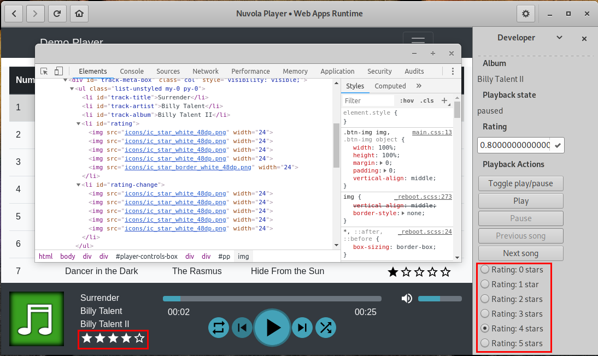
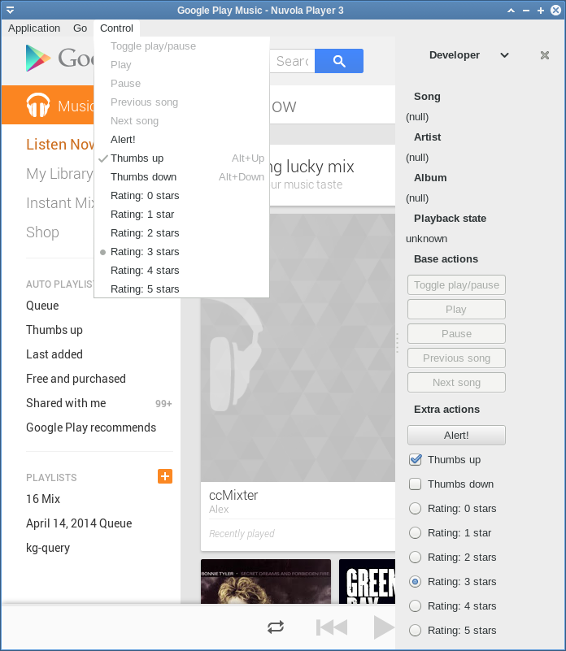
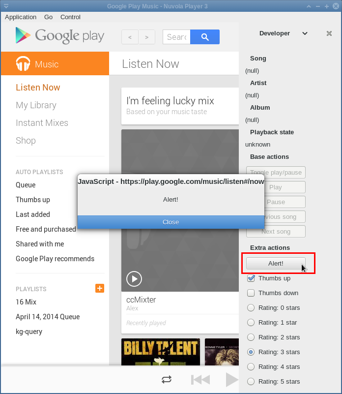
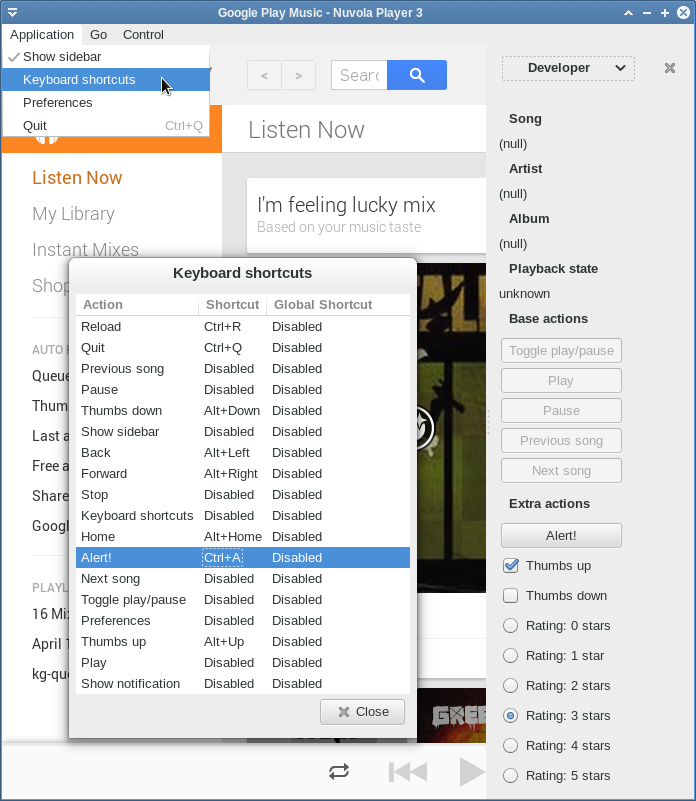

Actions API allows you to add custom actions alongside player actions. Typical examples include thumbs up/down, like/love or star rating, but we don't want to limit your fantasy.
First of all, we define some constants with action names. The action name has to consist only from letters, digits and dash. Then we create the actions in Nuvola.Core::InitAppRunner signal handler:
ACTION_ALERT with method
Nuvola.Actions.addAction within action group playback,
with scope win and label Alert!. Other parameters (mnemo_label, icon, keybinding, state)
are null.ACTION_THUMBS_UP and
ACTION_THUMBS_DOWN with the same method
Nuvola.Actions.addAction, but we specify initial state to be
true (on, checked).ACTION_RATING with method
Nuvola.Actions.addRadioAction. Options are specified
by an array ratingOptions and the initial state is set to 0 (0 starts).Note that translation function alias C_ is used mark short
translatable strings with context information ("Action") and ngettext for string with both
singular and plural forms.
... // Translations var C_ = Nuvola.Translate.pgettext var ngettext = Nuvola.Translate.ngettext ... var ACTION_ALERT = 'x-alert' var ACTION_THUMBS_UP = 'thumbs-up' var ACTION_THUMBS_DOWN = 'thumbs-down' var ACTION_RATING = 'rating' ... var WebApp = Nuvola.$WebApp() WebApp._onInitAppRunner = function (emitter) { Nuvola.WebApp._onInitAppRunner.call(this, emitter) Nuvola.actions.addAction('playback', 'win', ACTION_ALERT, C_('Action', 'Alert!'), null, null, null, null) Nuvola.actions.addAction('playback', 'win', ACTION_THUMBS_UP, C_('Action', 'Thumbs up'), null, null, null, true) Nuvola.actions.addAction('playback', 'win', ACTION_THUMBS_DOWN, C_('Action', 'Thumbs down'), null, null, null, true) var ratingOptions = [] for (var stars = 0; stars < 6; stars++) { ratingOptions.push([ stars, // stateId /// Star rating, {1} is a placeholder for a number Nuvola.format(ngettext('Rating: {1} star', 'Rating: {1} stars', stars), stars), // label null, // mnemo_label null, // icon null // keybinding ]) } Nuvola.actions.addRadioAction('playback', 'win', ACTION_RATING, 0, ratingOptions) } ...
Global window object not available
The Nuvola.Core::InitAppRunner signal is executed in a pure JavaScript environment without Window object. Use Nuvola.log() to print logging and debugging messages to terminal instead of console.log().
Nuvola Player is happy about the new actions, but it has no idea what to do with them. Let's
add these actions to the media player component with method
Nuvola.MediaPlayer.addExtraActions. Note that we have
to add one identifier for each option/state of a radio action, the indentifier consists of the
action name and the option id separated by two colons ::.
... var player = Nuvola.$object(Nuvola.MediaPlayer) ... var WebApp = Nuvola.$WebApp() ... WebApp._onPageReady = function () { var actions = [ACTION_ALERT, ACTION_THUMBS_UP, ACTION_THUMBS_DOWN] for (var i=0; i <= 5; i++) { actions.push(ACTION_RATING + '::' + i) } player.addExtraActions(actions) this.update() } ...
The media player component than orders Nuvola Player to show the actions in user interface:

As you can see in the previous picture, new actions are disabled/insensitive by default. Your task is to examine the web page whether the a particular action is available/enabled and to extract state of toggle and radio actions. Then update enabled flag with method Nuvola.actions.updateEnabledFlag or Nuvola.actions.updateEnabledFlags and state of radio and toggle actions with method Nuvola.actions.updateState or Nuvola.actions.updateStates.
... WebApp.update = function () { ... // Extract whether the action is enabled and its state from a web page var actionsEnabled = {} var actionsStates = {} actionsEnabled[ACTION_ALERT] = true actionsEnabled[ACTION_THUMBS_UP] = true actionsStates[ACTION_THUMBS_UP] = true;// on/checked actionsEnabled[ACTION_THUMBS_DOWN] = true actionsStates[ACTION_THUMBS_DOWN] = false // off/unchecked actionsEnabled[ACTION_RATING] = true actionsStates[ACTION_RATING] = 3 // three stars // Compare with previous values and update if necessary Nuvola.actions.updateEnabledFlags(actionsEnabled) Nuvola.actions.updateStates(actionsStates) ... } ...

The final step is to write handlers for the new actions similarly like for
player actions: extend WebApp._onActionActivated method
from tutorial.
... WebApp._onActionActivated = function (emitter, name, param) { switch (name) { /* Base media player actions */ case PlayerAction.TOGGLE_PLAY: ... break case PlayerAction.PLAY: ... break case PlayerAction.PAUSE: case PlayerAction.STOP: ... break case PlayerAction.PREV_SONG: ... break case PlayerAction.NEXT_SONG: ... break /* Custom actions */ case ACTION_ALERT: window.alert('Alert!'); break case ACTION_THUMBS_UP: Nuvola.clickOnElement(document.getElementById('thumbs-up')) break case ACTION_THUMBS_DOWN: Nuvola.clickOnElement(document.getElementById('thumbs-down')) break case ACTION_RATING: // param contains action's state, i.e. number of stars Nuvola.clickOnElement(document.getElementById('star-' + param)) break } } ...

Implementation detail
Player actions are created by Nuvola.MediaPlayer with the same API as described here .
Users can assign keyboard shortcuts to custom actions ;-)

It might sometimes happen that some actions make sense only in a certain user configuration. For example, Google Play Music offers only thumbs up/down rating for songs by default, but users can turn on five-star ratting in Music Labs. The following code detects which rating type is supported and adds actions accordingly.
var THUMBS_ACTIONS = [ACTION_THUMBS_UP, ACTION_THUMBS_DOWN] var STARS_ACTIONS = [] for (var i=0; i <= 5; i++) { STARS_ACTIONS.push(ACTION_RATING + '::' + i) } ... var WebApp = Nuvola.$WebApp() ... WebApp.getThumbs = function () { var elm = document.querySelector('#player-right-wrapper .thumbs.rating-container') return [elm, elm.childNodes[0], elm.childNodes[1]] } WebApp.getStars = function () { return document.querySelector('#player-right-wrapper .stars.rating-container') } WebApp.update = function () { ... // null = disabled; true/false toggled on/off var thumbsUp, thumbsDown try { var thumbs = this.getThumbs() if (thumbs[0].style.visibility === 'hidden') { thumbsUp = thumbsDown = null } else { this.toggleThumbRating(true); thumbsUp = thumbs[1].className === 'selected' thumbsDown = thumbs[2].className === 'selected' } } catch (e) { thumbsUp = thumbsDown = null } // null = disabled var starRating try { var stars = this.getStars() if (stars.style.visibility == 'hidden') { starRating = null } else { this.toggleStarRating(true) starRating = stars.childNodes[0].getAttribute('data-rating') * 1 } } catch (e) { starRating = null } ... } WebApp.toggleStarRating = function (enabled) { if (enabled && this.starRatingEnabled !== true) { player.addExtraActions(STARS_ACTIONS) this.starRatingEnabled = true } } WebApp.toggleThumbRating = function (enabled) { if (enabled && this.thumbRatingEnabled !== true) { player.addExtraActions(THUMBS_ACTIONS) this.thumbRatingEnabled = true } }